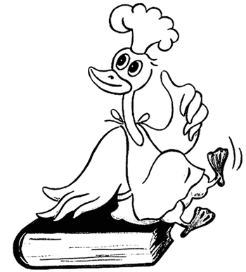

Салаты
 Салат «Москва»
Салат «Москва»
Подготовленную индейку обжарить, дать ей остыть и нарезать часть ломтиками, а часть оставить на украшение. Вареный картофель, очищенные от кожи соленые и свежие огурцы нарезать кубиками, вареное яйцо измельчить, а часть его оставить на украшение, все перемешать с соусом майонез.
Выложить горкой в виде башни в салатник и приложить со всех сторон мясо индейки, полить оставшимся соусом и украсить салат свежими огурцами, вареным яйцом, консервированными фруктами, зернистой икрой с маслом, зеленью петрушки.
Состав: индейка — 230 г, картофель — 85 г, соленые огурцы — 25 г, свежие огурцы — 25 г, вареное яйцо — 1 шт., майонез — 50 г, сливочное масло — 5 г, зернистая икра — 5 г, консервированные фрукты — 60 г, соль, зелень петрушки.
Салат «Русский красавец»Отварное мясо нежирной свинины, отварное мясо курицы, вареное яйцо нарезать ломтиками, добавить тертый сыр, посолить, заправить майонезом и перемешать. Приготовленный салат уложить горкой в салатник, посыпать тертым сыром и украсить ломтиками вареного мяса, свежими помидорами и огурцами, фруктами, зеленью.
Состав: мясо свинины —150 г, отварная курица — 150 г, сыр — 150 г, яйцо — 10 шт., майонез — 300 г, соль; на украшение: мясо — 250 г, сыр — 100 г, огурцы — 200 г, помидоры -200 г, фрукты — 200 г, зелень.
Неаполитанский салатОтварить дичь, отделить мясо от костей и нарезать кубиками сельдерей, маринованные огурцы, сваренные морковь, свеклу и картофель. Все соединить, заправить майонезом, солью, перцем и перемешать. Выложить в салатник горкой, украсить зеленью.
Состав: мясо — 100 г, маринованный огурец — 150 г, свекла — 60 г, сельдерей (корень) — 1 шт., морковь — 75 г, картофель — 80 г, соль, перец, зелень, майонез — 75 г.
Салат «Охотник»Пожарить филе подготовленной утки. Вареный картофель, соленые огурцы нарезать мелкими кубиками, добавить зеленый горошек. Все перемешать, посолить, заправить майонезом с томатным соусом, обложить жареным филе утки, полить готовым соусом, украсить крабами, маринованным виноградом, яблоками, мясным ланспиком, зеленью петрушки.
Состав: утка — 200 г, картофель — 35 г, соленые огурцы — 30 г, зеленый горошек — 15 г, майонез — 45 г, томатный соус — 10 г, виноград — 25 г, яблоки —15 г, мясной ланспик -25 г, крабы — 15 г, зелень петрушки, соль.
Салат «Виктория»Вареный картофель, соленые огурцы, зеленый салат, вареное яйцо, вареное мясо курицы мелко нарезать, перемешать, посолить, заправить соусом майонез с кетчупом и выложить в салатник. Украсить ломтиками мяса курицы, свежими яблоками, яйцом, крабами, зеленью петрушки, зернистой икрой, сливочным маслом.
Состав: курица —170 г, картофель — 45 г, соленые огурцы — 45 г, крабы — 5 г, соус майонез — 40 г, кетчуп —10 г, зернистая икра —10 г, свежие яблоки — 50 г, яйцо — 1 шт., зеленый салат —10 г, сливочное масло — 5 г, зелень петрушки, соль.
Салат «Ермак»Мясо вареной курицы или цыпленка нарезать тонкими ломтиками, вареный картофель и соленые огурцы также ломтиками, редьку натереть. Все посолить и заправить сметаной.
В салатник уложить салат горкой и украсить клюквой, маринованными фруктами и зеленью.
Состав: мясо курицы — 50 г, вареный картофель — 60 г, соленые огурцы — 30 г, редька -20 г, сметана — 30 г, клюква —15 г, фрукты — 30 г, соль, зелень, фрукты.
Салат «Варвара-краса»Мясо вареной курицы, вареный картофель, соленые огурцы, яблоки без кожицы и семян, помидоры нарезать кубиками. Все подготовленные продукты посолить и заправить майонезом. Перемешать и уложить горкой в салатник. Украсить маринованными или свежими фруктами и зеленью.
Состав: отварная курица — 50 г, вареный картофель — 40 г, яблоки — 30 г, помидоры, огурцы — 25 г, майонез — 40 г, фрукты — 40 г, соль, зелень.
Салат «Ромен»Красный стручковый перец освободить от семян, промыть и испечь в духовке. Нарезать соломкой, так же как и вареное мясо цыпленка, добавить зеленый горошек, отварной рис, все перемешать, посолить и полить салатной заправкой.
Готовый салат выложить горкой в салатник и украсить зеленью петрушки.
Состав: вареное мясо цыпленка — 40 г, стручковый перец — 50 г, зеленый горошек — 30 г, рис — 50 г, оливковое масло —15 г, перец, соль, сахарный песок, зелень.
Салат из курицы с фруктамиМякоть вареной курицы, яблоки, апельсины, нежирную ветчину, огурцы, вареный картофель нарезать соломкой, посолить, поперчить и заправить майонезом, перемешанным со сметаной. В салатник уложить горкой и посыпать тертым сыром. Украсить продуктами, входящими в состав салата, и зеленью.
Состав: отварная курица — 40 г, яблоки — 30 г, апельсины — 40 г, ветчина — 25 г, картофель — 30 г, сметана —15 г, огурцы — 30 г, майонез — 20 г, сыр — 25 г, соль, перец, зелень.

Салат из курицы с фасолью
Сварить фасоль до готовности в воде или в курином бульоне, добавив пучок огородной зелени. Откинуть на дуршлаг, затем выложить в салатник, добавить рубленое куриное мясо, кукурузу, салат, помидоры (лучше миниатюрные «виноградные»), рубленый эстрагон.
Разбавить майонез йогуртом и залить им салат.
Состав: вареное белое куриное мясо — 300 г, белая сухая фасоль — 1 кг, консервированная кукуруза — 0,5 банки, свежий зеленый салат —150 г, миниатюрные «виноградные» помидоры — 200 г, майонез — 200 г, натуральный йогурт — 1 упаковка, эстрагон, зелень.
Салат из курицы с помидорамиОтварную цветную капусту, морковь, свежие помидоры и соленые огурцы нарезать кубиками. Перемешать с зеленым горошком, посолить и заправить сметаной с томатным соусом. Выложить горкой в салатник, обложить вареным мясом кур или дичи, еще раз полить готовым соусом.
Украсить кружочками яблок, свежими огурцами, помидорами, зеленью петрушки.
Состав: вареные куры — 50 г, цветная капуста — 50 г, зеленый горошек — 30 г, морковь -40 г, свежие огурцы — 30 г, свежие помидоры — 40 г, соленые огурцы — 30 г, яблоко — 30 г, сметана — 30 г, томат — 10 г, зелень петрушки, соль.
Салат из курицы с маринованными огурцамиКуриное мясо отделить от костей. Очищенные от кожуры огурцы, картофель, мясо и яйца нарезать кубиками. В майонез замешать соль, сахар, перец, лимонный сок и томатную пасту. В соус положить сначала огурцы, мясо, горошек и яйца, потом — картофель, все осторожно перемешать. Украсить горошком, яйцом и зеленью. Маринованные огурцы можно заменить свежими. К соусу можно добавить 2–3 столовые ложки сливок.
Состав: вареное или жареное мясо курицы — 500 г, картофель — 2 шт., маринованные огурцы — 3 шт., зеленый горошек — 0,75 стакана, яйца — 3 шт., майонез — 1 банка, сок лимона — 1 ст. ложка, томатная паста — 1 ч. ложка, перец, соль, сахар, зелень.
Салат из курицы с цветной капустойКурицу и сваренные овощи нарезать кубиками, смешать с соусом и украсить кочешками цветной капусты, ломтиками моркови и листиками зелени.
Состав: вареное или жареное куриное мясо — 300 г, цветная капуста — 1–2 кочана, горошек — 1 стакан, морковь — 1–2 шт., майонез или сметанный соус — 1 стакан, зелень укропа или петрушки.
Салат из цыпленкаСельдерей и вареное филе цыпленка нарезать соломкой, вареные макароны — на части по 4 см, маринованные грибы и помидоры — ломтиками, вареные яйца мелко покрошить. Все посолить, поперчить, смешать и заправить майонезом.
Выложить горкой, полить майонезом и украсить продуктами, входящими в состав салата, и зеленью петрушки.
Состав: мясо цыпленка — 50 г, сельдерей — 50 г, макароны — 40 г, грибы — 30 г, помидоры — 30 г, яйцо — 1 шт., майонез — 40 г, соль, перец, зелень.
Салат с эстрагономСтручки сладкого красного перца освободить от семян и запечь, остудить и нарезать лапшой. Вареное мясо цыпленка нарезать соломкой. Отварить зеленый горошек (можно заменить консервированным). Рис отварить в подсоленной воде 15 минут или залить оливковым маслом и овощным отваром и припустить до готовности. Подготовленные продукты смешать и залить салатной заправкой. Выложить в салатник горкой и посыпать мелко нарезанной зеленью петрушки и листиками эстрагона.
Состав: мясо цыпленка — 75 г, красный стручковый перец —100 г, зеленый горошек -75 г, рис —100 г;
для заправки: уксус — 10 г, оливковое масло — 10 г, готовая горчица —15 г; зелень петрушки — 5 г, эстрагон — 5 г.
Салат с сельдереемСельдерей, нарезанный соломкой, вареное мясо цыпленка, соленые или маринованные огурцы, отварные грибы перемешать, посолить и заправить майонезом с горчицей.
При подаче выложить горкой, украсить теми же продуктами и зеленью петрушки.
Состав: мясо цыпленка — 60 г, сельдерей —100 г, грибы — 20 г, майонез — 40 г, готовая горчица — 6 г, огурцы —15 г, перец, зелень.
Салат острыйИзмельченный (натертый) сельдерей, вареное филе цыпленка, нарезанное соломкой, красный стручковый перец, нарезанный кольцами, и листья салата посолить, перемешать, полить салатной заправкой. При подаче украсить продуктами, входящими в состав салата, и зеленью.
Продукты берутся произвольно.
Салат с маринованными грибамиФиле вареного цыпленка, сельдерей нарезать соломкой, маринованные грибы — ломтиками, вареные макароны нарезать длиной 4–5 см, свежие помидоры мелкими кубиками, вареные яйца нарубить, зелень петрушки мелко нашинковать. Переложить все в посуду, посолить, поперчить и заправить майонезом. Украсить ломтиками помидоров, дольками яиц.
Состав: мясо цыпленка —100 г, сельдерей —100 г, макароны —100 г, маринованные грибы — 75 г, свежие помидоры — 75 г, вареные яйца — 2 шт., майонез — 120 г, соль, перец, зелень петрушки.
Салат с куриной печеньюКартофель отварить, печень поджарить. Все нарезать, добавить рубленый лук, посолить и заправить растительным маслом.
Состав: куриная печень — 6–7 шт., картофель — 4 шт., лук — 1 шт., растительное масло — 4 ст. ложки, соль.
Салат «Каприз»Вареный язык, ветчину, мясо цыпленка, вареные грибы нарезать соломкой. Посолить и полить салатной заправкой (см. Салат с эстрагоном).
Готовый салат выложить горкой в салатник и украсить зеленью петрушки.
Состав: мясо цыпленка — 30 г, вареный язык — 50 г, вареная ветчина — 40 г, грибы — 25 г, салатная горчичная заправка — 30 г, зелень, соль.